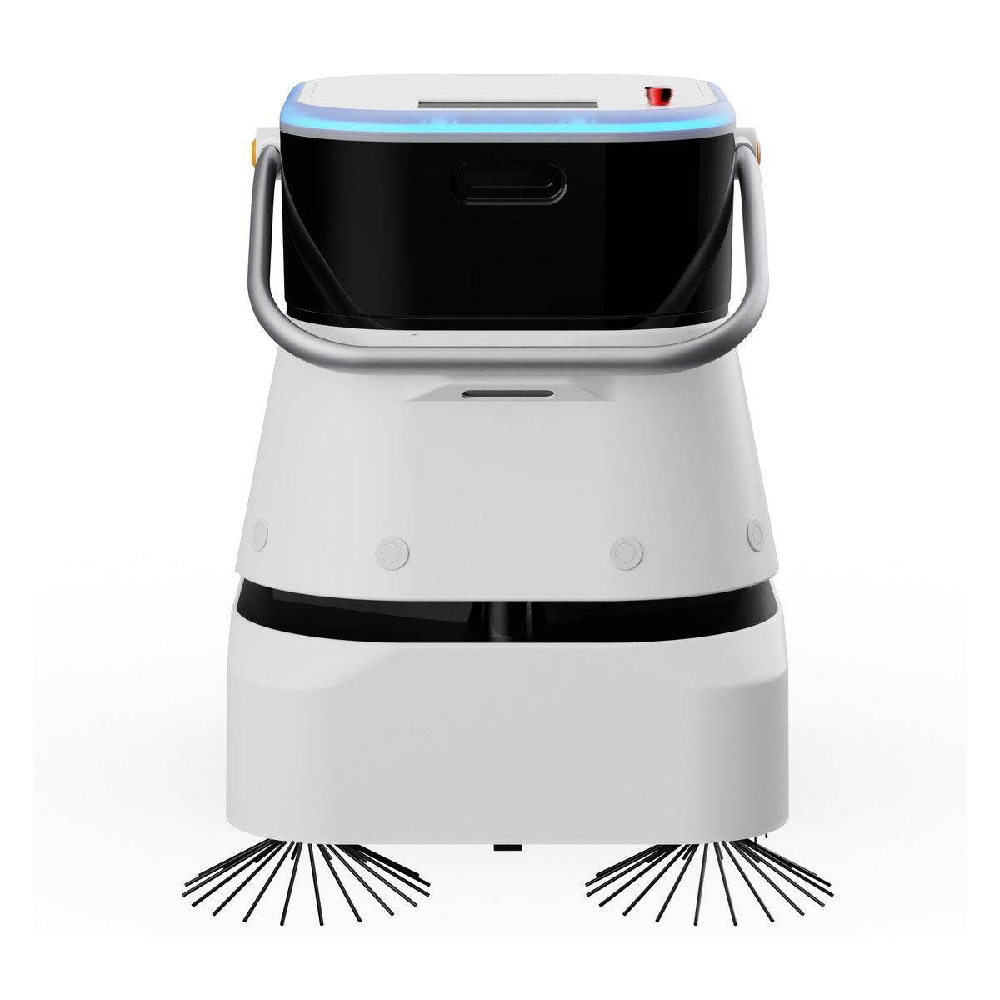
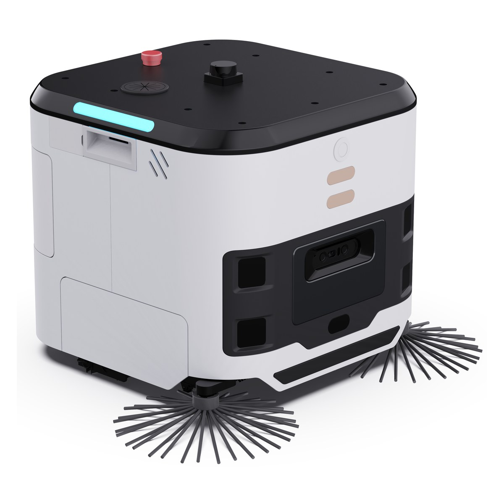

"这台机器多久能回本"经常在清洁机器人项目勘测前被问到，但需要结合现场条件评估。任何在勘测之前给出的回本周期，都建立在一串没被确认的假设上：每天作业几小时、覆盖多少面积、需不需要人跟着、耗材多久换一次。假设错一个，结论就完全不同。
这篇文章不给回本公式，而是列出算这个公式之前必须先测出来的六条基线。它们全部可以在一次现场勘测里完成，成本很低，但决定了后面所有判断的可靠程度。
一、六条基线：分别决定什么
这六条不是并列的检查项，它们各自锁定方案里的一个变量。缺哪一条，对应的那部分估算就只能靠猜。
要测的是机器真正能跑到的连续硬质地面，扣掉货架下方、扶梯口、卫生间、台阶区与常年堆放货物的位置。这个数字通常比总面积小得多，也是决定机型幅宽与台数的直接依据。用总面积去算，可能高估所需台数。
抛光砖、水磨石、环氧地坪、防滑砖与地毯对应完全不同的作业方式与耗材消耗速度。污染类型同样关键：粉尘、油污与生鲜区的水渍，需要的清洁方式不一样，硬洗一遍解决不了油污。
营业时间内能不能跑、夜间有没有值班人员、商场统一管理是否限制夜间作业。窗口长度直接决定一台机器一天能完成多少面积——同一台设备在 8 小时窗口和 3 小时窗口下的产出差三倍。
机器遇人会减速让行，人流越密实际作业速度越低。高峰时段的走廊里，机器可能大部分时间都在等待。这条决定的是"能不能在营业时段作业"，以及排班要避开哪些时段。
加水点、排污点、充电位与停放空间在哪里、距离作业区多远。一趟作业中间要跑多远去加水，直接吃掉有效作业时间。这一条需要在方案阶段确认，以减少实施阶段的补给问题。
机器不做的部分仍然要人做：边角、台阶、卫生间、玻璃与桌面。明确机器覆盖哪些、人负责哪些，才能算出真实的人力变化——大多数项目是人力结构调整，不是人力消失。
六条中的第一条和第五条需要重点确认。可机洗面积没测，台数就是拍的；补给点位没看，实施时才发现最近的加水点在两百米外的后勤区，作业效率直接打折。
二、为什么"理论作业效率"不能直接用
规格书上会给出每小时清洁面积，这个数字是在空旷、无人、单向直线行驶条件下测得的。真实现场会把它逐层削减，削减的比例取决于上面那六条基线。
这五项里，前两项主要取决于场地本身，需要结合现场条件评估；后三项属于可以通过方案设计缓解的部分。加水往返可以通过增设临时补给位缩短，充电中断可以通过错开作业时段或增加台数避免，现场变化可以通过与运营方约定"作业时段内不堆货"来减少。也就是说，看到实际效率低于预期时，第一反应不该是换机器，而是先判断损耗落在哪一项、那一项是不是可以改的。
另一个常见误判是把避障等待当成产品缺陷。机器遇人减速让行属于安全策略的一部分，人流密集时可能增加等待，具体等待时间仍取决于设备设置与现场人流。真正该做的是把作业时段挪到人流低谷，而不是要求供应商"把避障调灵敏一点"——后者是在拿安全余量换效率数字。
所以正确的做法不是拿规格书数字去除面积，而是在试点阶段实测：让机器在真实场地、真实时段跑一周，记录实际完成面积与实际耗时。这个数字才能用于后续场地的推算。



三、一个具体的算例
下面用一个简化的例子说明这些基线怎么改变结论。假设一个总建筑面积 12000 平方米的商场楼层，第一轮沟通里被按总面积估算，得出"一台大型机型即可覆盖"。勘测之后情况变了：
从成本角度看，这个调整并不是简单的"变贵了"。原方案一台大型机型看起来便宜，但它只能覆盖中庭那部分，连廊仍然要靠人工拖地——也就是说这笔投入换不来完整的人力结构调整，甲方最后会觉得"买了机器，保洁一个也没少"。调整后的组合方案设备支出增加，却把公共区的可机洗面积基本吃满，加上一个临时补给位省下的往返时间，实际每天能完成的面积明显提高。
换个说法：单看设备清单，组合方案的单价更高；按"每平方米每天的自动清洁成本"来看，它反而更低，因为分母大了。ROI 讨论里真正该比较的是后者。只比设备总价，会系统性地偏向那些覆盖不全、但报价好看的方案，而这类方案在交付半年后往往被判定为"效果不明显"。
这个例子里，没有任何一条是技术难题，全都是现场信息。但如果按第一轮的估算签了合同，交付时就会出现"机器进不去连廊""营业前跑不完"这类无法用调参数解决的问题。勘测的价值就在这里。
回本周期不是一个可以先谈的前提，而是六条现场基线算出来的结果。基线没测就给出的回本数字，只是把风险留到了交付阶段。
四、成本里容易被漏掉的几项
设备价格之外，还有几项持续支出会影响长期账。把它们列进预算，回本估算才有意义。
滚刷、胶条、滤网与清洁剂按作业时长消耗，粗糙地面消耗更快。
用量通常不高，但需要确认由谁承担——物业还是租户，合同里要写清。
加水、倒污水、清理滚刷缠绕物仍需要人。这部分工时要算进人力账。
响应时限、备件供应与停机期间的替代方案，都应在合同里明确。
"日常照看"这一项需要纳入成本评估。很多项目按"减少 N 个保洁"来算收益，实际上机器需要有人加水、倒污水、处理缠绕，还要有人看告警。真实的变化通常是保洁人员的工作内容改变——从大面积拖地转向边角与精细清洁，而不是人数直接下降。把这一点讲清楚，项目在物业和甲方那边的接受度反而更高。
五、试点该怎么做
试点的目的是把六条基线变成可用的数字，而不是演示机器能动。建议按下面四步执行，周期两到四周。
STEP 2 里"记录中断原因"需要一份固定的分类，否则两周下来记录会写成一堆无法汇总的自由描述。建议直接用下面五类，每次中断只归一类：
两周后把这五类的频次排个序，改进优先级就出来了：缠绕和临时堆货靠现场管理解决，缺水靠增设补给位，电量靠调整排班或加台数，卡困靠改路径或换机型。没有分类的记录做不到这一步，只能得出一句"经常中断"。
STEP 1 里"不要只选容易作业的区域"值得强调。试点区域选得太理想，得出的效率数字推广到全场地时可能偏高，造成台数不足或作业无法按计划完成，项目在第二阶段失去信任。选一个中等难度、包含各类地形的区域，拿到的数字更接近实际作业条件，推广时仍需结合场地复核。
最后一点：把运维责任写进文档，明确到岗位。谁加水、谁换耗材、谁看告警、机器卡住了谁去处理。这套分工不明确的项目，无论回本算得多好，半年后大概率会看到机器停在角落里——不是因为它坏了，而是因为没有人的日常工作里包含"照看它"这一项。